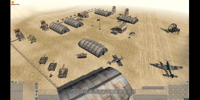
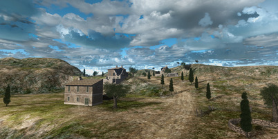
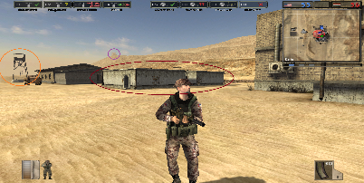

Mastering the Art of Tank Warfare - El Alamein Strategies
Posted by: Sgt_SteelTiger | March 10, 2002 | Filed under: Tactics, Vehicles
Whats up soldiers! After countless hours pwning n00bs on El Alamein, I figured it was time to share some of my elite tank strategies. This desert map is ALL about armor control, and if ur team doesn't know these tricks, prepare to get owned HARD.

First off, forget what everyone keeps saying about rushing the center flag. That's a total deathtrap unless you've got SERIOUS air support. The real pro strat is to form a "crescent" formation with 3-4 tanks along the eastern ridge. From there u can totally dominate the map while staying protected from air attacks.
My clan (=WW2= Warriors) used this last weekend in CAL and totally destroyed the competition. The trick is having a dedicated repair guy for each tank. Some ppl think engineers are useless but they're SO wrong. A good engineer/tank combo is practically UNSTOPPABLE!!
READ FULL ARTICLE >>
~ Sgt_SteelTiger
=WW2= Warriors Clan | Tank Division Captain
ICQ: 247895633 | AIM: SgtSteelTiger77
Road to Rome Expansion Pack - First Impressions!!!
Posted by: CommandoJoe | March 8, 2002 | Filed under: News, Reviews
OMG DICE just announced the first expansion for BF1942 called "Road to Rome" and it looks AMAZING!!! My cousin works at EB Games and he showed me the press release. We're getting 6 new maps, 8 new vehicles and even the Italian army as a new playable faction!!!
Rumor has it the expansion will drop sometime in early 2003. The coolest part is they're adding the Italian faction with all new weapons and character models. Also Monte Cassino is confirmed as one of the new maps, which was one of the most epic battles of the Italian campaign.

I'm saving my allowance starting NOW cuz this is gonna be a must-buy for any serious BF player. My prediction is this will totally revive the multiplayer scene which has been getting a bit stale lately with all the CS and Unreal players stealing our servers.
READ FULL ARTICLE >>
~ CommandoJoe
BF Stats: 1337 hours played | K/D: 2.4 | Favorite class: Engineer
"If you can't dodge it... ram it!" - Midway Island air combat motto
Ultimate Sniper Guide - Top Secret Spots Revealed!
Posted by: xXxSniperGodxXx | March 5, 2002 | Filed under: Tactics, Classes
Listen up, soldiers! Are you tired of getting fragged the moment you spawn? Wanna rack up kills without ever being seen? Well I've spent the last 3 months finding EVERY elite sniper spot in the game, and now I'm sharing my secrets with my loyal readers!
Everyone knows about the lighthouse on Wake Island, but that's amateur hour. REAL pros know about the cliff glitch on Guadalcanal that lets you see the ENTIRE Japanese base while remaining completely hidden from view. It's not cheating - it's tactical superiority!!!

To find this spot, go to the far west cliff and crouch-jump onto the small rock ledge. It takes some practice but once you get it, you'll be UNSTOPPABLE. I got called a hacker 5 times yesterday using this spot LOL!!!
READ FULL ARTICLE >>